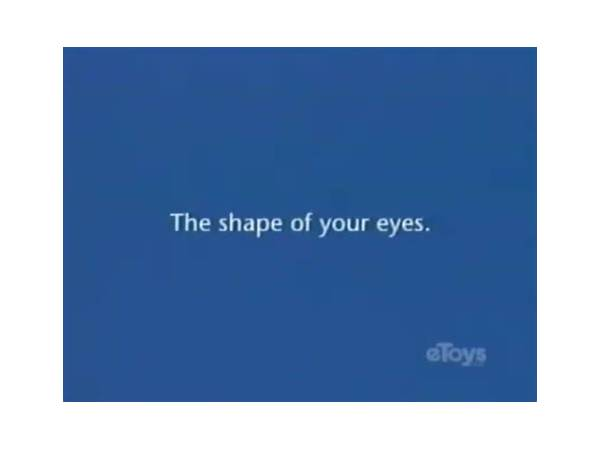

eToys
IPO to Chapter 11 in twenty-two months, a dot-com retail death next to its more famous neighbor.

In May 1999, at the height of the dot-com boom, an online toy retailer went public. It was called eToys, and the pitch fit the season perfectly: the product every family already bought, the retailer every family already trusted, moved onto the internet, where the future obviously lived. [S1]
Twenty-two months later, in March 2001, it filed for Chapter 11 bankruptcy protection. [S1]
That is nearly the whole sourced record, and this gazette will not decorate it: an IPO in May 1999, a bankruptcy filing in March 2001, and an address that later ended up under other retail owners, as the domain passed through the after-market that absorbed so many dead-boom trademarks. [S1] What the record supports is the shape, and the shape is the story: a company judged ready for the stock market in spring, gone by the following spring.
The timing deserves a moment of honesty. eToys did not simply fail; it failed into a wall. Between its IPO and its filing, the dot-com climate collapsed -- its exact contemporary Pets.com, the sock-puppet pet-food retailer, went public in February 2000 and announced liquidation that November, nine months from listing to lights-out. [S2] Two online retailers of beloved domestic goods, both listed at the top of the wave, both dead within two years of it. eToys at least reached the shelter of Chapter 11, the legal form of "not gone, just rearranged."
It is worth asking what an online toy store was actually for. Toys are the opposite of the goods the internet sells well: urgent, physical, gifty, seasonal -- bought in December by people who want to walk out holding the box. Whatever advantages a website had in selection, the holiday toy business ran on shelves and certainty. That analysis is hindsight, freely admitted; the bankruptcy filing is the sourced fact, the reasoning is the gazette's.
The name itself became a minor artifact of the boom's aftermath: the etoys.com address, like so many liquidated domains, resurfaced under later retail owners -- the internet's equivalent of a storefront being re-let by new tenants to whoever walked past. [S1] The company died; the address, being merely an address, could not.
Why remember eToys rather than the hundred other toy-and-pet-and-grocery sites of 1999 that died the same death? Because it is the cleanest example of the era's arithmetic: the stock market valued the story of selling toys online at one number in May 1999, and twenty-two months of actual toy selling produced a completely different one. No mascot, no Super Bowl ad, no famous puppet -- just the naked gap between the story and the business.
In 1999 the market said yes to an online toy store. By 2001 the store had answered. The toys, presumably, were fine.
Remembered: the twenty-two months between the market's question and the courthouse's answer.
Sources
- S1: Wikipedia: EToys.com -- https://en.wikipedia.org/wiki/EToys.com
- S2: Wikipedia: Pets.com -- https://en.wikipedia.org/wiki/Pets.com
PROVENANCE
| Exhibit no.: | 006 |
| Data-source mode: | facts: seed-corpus; wikipedia-unreachable; wayback-cdx-unreachable |
| Illustration: | sourced image -- Bing image search, retrieved 2026-08-29 |
| Found via: | bing-image-search |
| Image url: | https://ts2.mm.bing.net/th?id=OIP.EVSu7qwwxjaqlni5jxOWoQHaFj&pid=15.1 |
| Generated: | 2026-08-29 |
| Generator: | deadweb-pipeline 0.1 (deterministic scaffold) |
| Editorial pass: | web-product-engineer (editorial pass 2) |
| Status: | published |
| Source page: | https://archive.org/details/pbs-kids-etoys.com-funding-sponsor-2000-2001-hq-vhs-version |
SOURCES
- Wikipedia: EToys.com -- https://en.wikipedia.org/wiki/EToys.com
- Wikipedia: Pets.com -- https://en.wikipedia.org/wiki/Pets.com